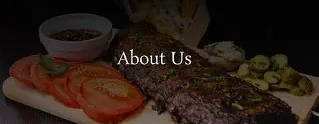

TASTE OF TRADITION!!!
About Us - Test of Tradition

Welcome to Taste of Tradition
where the flavors of India come alive! 🇮🇳✨
e adds India is a land of diverse tastes, and each statits own magic to the food culture. Our website celebrates the traditional dishes from five flavorful states — Maharashtra, Gujarat, Punjab, Kolkata, and Rajasthan — each with its unique taste and story. 🍲
Our Featured States
Maharashtra –
Known for its spicy and tangy flavors like Vada Pav, Puran Poli, and Modak
- Puran poli
- Vada Pav
- Modak
Gujarat –
Famous for its sweet and savory dishes like basundi,shrinkand, and lapsi.
land of seetness and tradition.special foods like.
- Basundi
- Shrikhand
- Lapsi
Punjab –
The land of rich and creamy delights such as Butter Chicken, Makki di Roti, and Sarson da Saag.
Known for its blod and rich taste.Famous dishes are
- sarson da saag & Makki di roti
- Chole Bhature
- kada prasad
Kolkata (West Bengal) –
Home of irresistible sweets like Rasgulla,Mishti Doi,kathi roll...
City of joy and swwets. popular foods are
- Rosogolla
- Misthi doi
- Kathi roll
Rajasthan –
Known for royal and flavorful dishes like Dal Baati Churma, Ghevar, and Ker Sangri.
known for royal flavours and colorful culture.famous dishes include
- Dal batti Churma
- Gatte ki sabji
- Ghevar
At Taste of Tradition, we bring together the authentic flavors of India’s states — a perfect mix of sweet, spicy, and soulful!